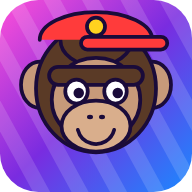

Amazing Gorilla Racing
Política de privacidad
Última actualización: 17 de noviembre de 2026
Amazing Gorilla Racing no recoge, no envía y no comparte ningún dato personal. No tiene anuncios, ni compras, ni cuentas de usuario, ni estadísticas de uso.
Esta política se aplica al juego Amazing Gorilla Racing en sus dos formas: la aplicación para Android y la versión web que se juega e instala desde el navegador.
Qué datos recoge el juego
Ninguno. El juego no pide tu nombre, tu correo, tu edad, tu ubicación ni tus contactos. No hay que registrarse ni iniciar sesión. No usa identificadores de publicidad ni herramientas de seguimiento o de análisis.
Qué se guarda y dónde
Tu partida se guarda solo en tu dispositivo, en el almacenamiento local de la aplicación o del navegador: plátanos, trofeos, gorilas y coches desbloqueados, mejoras, misiones y logros, mejores tiempos con su «fantasma», y tus ajustes (idioma, sonido, controles, calidad gráfica).
- El juego no envía esa información a ningún servidor y el desarrollador no puede verla.
- Para borrarla, desinstala la aplicación o borra sus datos desde los ajustes de Android. En la versión web, borra los datos del sitio desde el navegador.
- Si tienes activada la copia de seguridad de Android, el sistema puede incluir la partida en la copia de tu propia cuenta de Google. Esa copia la gestiona Google según tus ajustes; el desarrollador no tiene acceso a ella.
Conexión a Internet
- Aplicación para Android: todo el juego va dentro de la aplicación. No se conecta a ningún servidor para jugar y funciona sin conexión.
- Versión web: el navegador descarga los archivos del juego desde GitHub Pages, el servicio que aloja la página. Después funciona sin conexión; cuando hay conexión, comprueba en ese mismo sitio si hay una versión más nueva del juego. No se conecta a ningún otro servidor.
El juego no incluye servicios de terceros: ni publicidad, ni analíticas, ni redes sociales, ni fuentes o programas cargados desde otros sitios.
Servicios que no controla el desarrollador
- GitHub Pages (solo la versión web): como cualquier servidor web, GitHub puede registrar datos técnicos de la conexión, por ejemplo la dirección IP, según su propia declaración de privacidad. El desarrollador no recibe esos datos ni puede consultarlos.
- Google Play (si instalas la aplicación desde allí): Google gestiona la descarga y las actualizaciones según su propia política de privacidad, y muestra al desarrollador estadísticas generales y anónimas, como el número de instalaciones o los informes de fallos de quienes han aceptado compartirlos con Google.
Permisos y sensores
- Vibración: para la vibración del móvil durante la carrera. Se puede desactivar en los ajustes del juego.
- Acceso a la red: lo declara la tecnología con la que está hecha la aplicación para Android. El juego no lo usa para enviar ni recibir datos tuyos.
- Sensor de movimiento: si eliges conducir inclinando el móvil, el juego lee la inclinación en ese momento para girar el coche. No la guarda ni la envía.
El juego no usa la cámara, el micrófono, la ubicación, los contactos ni tus archivos.
Compartir
Si usas una función de compartir del juego (por ejemplo, retar a alguien con tu tiempo, o guardar una foto o un vídeo de la carrera), el juego entrega ese contenido a tu dispositivo y eres tú quien decide si lo guardas o a qué aplicación o persona se lo envías. El juego no lo sube a ningún servidor.
Niños
El juego es apto para todas las edades. Como no recoge datos personales de nadie, tampoco recoge datos de niños. No muestra anuncios, no ofrece compras y no permite chatear ni contactar con otras personas.
Cambios en esta política
Si el juego cambia de forma que afecte a tu privacidad, esta página se actualizará antes de publicar ese cambio y se cambiará la fecha de arriba.
Contacto
Para cualquier pregunta sobre esta política, escribe al desarrollador de Amazing Gorilla Racing: [CORREO-DE-CONTACTO-PENDIENTE]
Privacy Policy
Last updated: 17 November 2026
Amazing Gorilla Racing does not collect, send or share any personal data. It has no ads, no purchases, no user accounts and no usage analytics.
This policy applies to the game Amazing Gorilla Racing in both of its forms: the Android app and the web version that is played and installed from the browser.
What data the game collects
None. The game does not ask for your name, e-mail, age, location or contacts. There is nothing to sign up for and nothing to log in to. It uses no advertising identifiers and no tracking or analytics tools.
What is saved, and where
Your progress is saved only on your device, in the local storage of the app or the browser: bananas, trophies, unlocked gorillas and karts, upgrades, missions and achievements, best times with their “ghost”, and your settings (language, sound, controls, graphics quality).
- The game does not send this information to any server, and the developer cannot see it.
- To delete it, uninstall the app or clear its data in Android settings. In the web version, clear the site data in your browser.
- If Android backup is turned on, the system may include your saved game in the backup of your own Google account. That backup is managed by Google according to your settings; the developer has no access to it.
Internet connection
- Android app: the whole game is inside the app. It does not connect to any server to play, and it works offline.
- Web version: your browser downloads the game files from GitHub Pages, the service that hosts the page. After that it works offline; when you are online, it checks that same site for a newer version of the game. It does not connect to any other server.
The game includes no third-party services: no advertising, no analytics, no social networks, and no fonts or scripts loaded from other sites.
Services the developer does not control
- GitHub Pages (web version only): like any web server, GitHub may log technical connection data, such as the IP address, under its own privacy statement. The developer does not receive that data and cannot look it up.
- Google Play (if you install the app from there): Google handles downloads and updates under its own privacy policy, and shows the developer general, anonymous statistics, such as the number of installs or crash reports from people who have agreed to share them with Google.
Permissions and sensors
- Vibration: for phone vibration during a race. You can turn it off in the game settings.
- Network access: declared by the technology the Android app is built with. The game does not use it to send or receive any data about you.
- Motion sensor: if you choose to steer by tilting your phone, the game reads the tilt at that moment to turn the kart. It does not store or send it.
The game does not use the camera, the microphone, your location, your contacts or your files.
Sharing
If you use a sharing feature in the game (for example, challenging someone with your time, or saving a photo or a video of the race), the game hands that content to your device and you decide whether to keep it and which app or person to send it to. The game does not upload it to any server.
Children
The game is suitable for all ages. Because it collects no personal data from anyone, it collects none from children either. It shows no ads, offers no purchases and has no chat or any other way to contact other people.
Changes to this policy
If the game changes in a way that affects your privacy, this page will be updated before that change is released, and the date above will change.
Contact
If you have any question about this policy, write to the developer of Amazing Gorilla Racing: [CORREO-DE-CONTACTO-PENDIENTE]